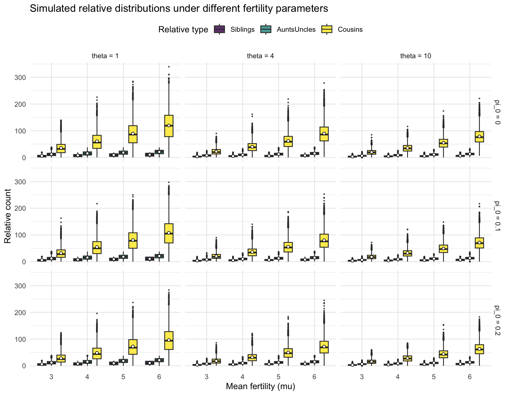

How fertility parameters affect the family structure distribution
Author
Junhui He
Published
June 3, 2026
1 Family structure model
1.1 Fertility distribution
Here we establish a zero inflated negative binomial distribution for the number of children per family—fertility distribution with parameters: mean fertility (\(\mu\)), dispersion/size (\(\theta\)), and zero‑inflation probability (\(\pi_0\)), denoted as \(ZINB(\mu, \theta, \pi_0)\). According to the definition of the negative binomial distribution, the mean and variance of \(NB(\mu,\theta)\) is given by \(\mu\) and \(\mu + \frac{\mu^2}{\theta}\), respectively. Therefore, the mean and variance of \(ZINB(\mu, \theta, \pi_0)\) is defined by \(\mu(1-\pi_0)\) and \(\mu(1-\pi_0) + \frac{\mu^2(1-\pi_0)}{\theta}+\mu^2\pi_0(1-\pi_0)\), respectively.
1.2 Sibling distribution
The sibling distribution is the distribution of the number of siblings per person, which can be derived from the fertility distribution. For any \(k \geq 0\), the probability of having \(k\) siblings is given by: \[P(num_{sib}=k) \propto (k+1)P(num_{child}=k+1).\] This is because a person with \(k\) siblings must have been born into a family with \(k+1\) children, and there are \(k+1\) ways to choose which child they are among those children. If the fertility distribution is \(ZINB(\mu, \theta, \pi_0)\), then the sibling distribution is a negative binomial distribution with parameters mean fertility (\(\frac{\mu(\theta+1)}{\theta}\)), dispersion/size (\(\theta+1\)), denoted as \(NB(\frac{\mu(\theta+1)}{\theta}, \theta+1)\). We note that the average number of siblings per person \(\frac{\mu(\theta+1)}{\theta}\) is higher than the average number of children \(\mu(1-\pi_0)\) minus one, called the “sibship size paradox”.
1.3 Fertility and sibling parameters
Based on the empirical data on U.S. women, a reasonable range of parameters for the fertility distribution is \[\mu \in [2, 6], ~ \theta \in [1, 10], ~ and ~ \pi_0 \in [0, 0.2].\]
2 Effect of fertility parameters on relative counts
We explore the effect of the fertility parameters on the family structure distribution, which is defined as the distribution of the number of relatives one individual has.
2.1 Simulate the relative counts for the focal individual
Code
simulate_relatives_zinb <-function(mu, size, pi0,n_sim =10000,max_kids =20) { draw_fert <-function(n) {ifelse(runif(n) < pi0, 0L,as.integer(pmin(rnbinom(n, size, mu = mu), max_kids))) } draw_sibs <-function(n) {as.integer(pmin(rnbinom(n, size +1, mu = mu * (size +1) / size), max_kids -1)) }# 1. Siblings for the focal individual siblings <-draw_sibs(n_sim)# 2. Aunts & uncles (no subtraction needed) aunts_maternal <-draw_sibs(n_sim) # mother’s siblings aunts_paternal <-draw_sibs(n_sim) # father’s siblings aunts_uncles <- aunts_maternal + aunts_paternal# 3. Cousins: for each aunt/uncle, simulate their fertility and sum cousins <- purrr::map_int(aunts_uncles, function(n_au) {if (n_au ==0L) 0L elseas.integer(sum(draw_fert(n_au))) }) tibble::tibble(Siblings = siblings,AuntsUncles = aunts_uncles,Cousins = cousins,Parents =2L,Grandparents=4L,TotalKin = siblings + aunts_uncles + cousins +2L +4L )}
2.2 Prepare parameter combinations
Code
# Prepare fertility parameter tablesfert_params =expand.grid(mu =c(3, 4, 5, 6),size =c(1, 4, 10),pi0 =c(0, 0.1, 0.2))fert_params =as.data.frame(fert_params)[, c("pi0", "size", "mu")]n_sim =10000# Number of simulations per parameter combination
2.3 Simulate relative counts for each parameter combination
mean_relative_counts =t(sapply(relative_counts, colMeans))[, c("Siblings", "AuntsUncles", "Cousins", "TotalKin")]mean_relative_counts =as.data.frame(mean_relative_counts)colnames(mean_relative_counts) =c("mean_siblings", "mean_aunts_uncles", "mean_cousins", "mean_total")mean_relative_counts =cbind(fert_params, mean_relative_counts)kable(mean_relative_counts, digits =2, caption ="Expected number of first-, second-, and third-degree relatives for a focal individual (simulated, by each fertility paramater combination)")
Expected number of first-, second-, and third-degree relatives for a focal individual (simulated, by each fertility paramater combination)
pi0
size
mu
mean_siblings
mean_aunts_uncles
mean_cousins
mean_total
0.0
1
3
5.91
11.88
35.61
59.41
0.0
1
4
7.69
15.36
60.91
89.95
0.0
1
5
9.18
18.34
89.70
123.22
0.0
1
6
10.42
20.95
119.80
157.17
0.0
4
3
3.71
7.44
22.27
39.42
0.0
4
4
5.02
9.93
39.89
60.84
0.0
4
5
6.23
12.43
62.15
86.81
0.0
4
6
7.54
14.91
89.92
118.38
0.0
10
3
3.29
6.62
19.81
35.71
0.0
10
4
4.41
8.79
35.17
54.37
0.0
10
5
5.53
10.99
55.07
77.59
0.0
10
6
6.55
13.17
78.86
104.57
0.1
1
3
5.87
11.83
31.80
55.50
0.1
1
4
7.68
15.36
54.74
83.78
0.1
1
5
9.08
18.44
80.85
114.37
0.1
1
6
10.50
20.94
108.00
145.44
0.1
4
3
3.81
7.49
20.12
37.41
0.1
4
4
5.01
10.02
36.02
57.05
0.1
4
5
6.23
12.42
55.77
80.43
0.1
4
6
7.46
14.86
80.21
108.54
0.1
10
3
3.29
6.61
17.83
33.72
0.1
10
4
4.39
8.89
32.05
51.32
0.1
10
5
5.49
10.95
49.21
71.65
0.1
10
6
6.61
13.20
71.43
97.23
0.2
1
3
5.82
11.91
28.56
52.29
0.2
1
4
7.61
15.27
48.45
77.32
0.2
1
5
9.25
18.40
72.19
105.84
0.2
1
6
10.51
21.05
96.38
133.94
0.2
4
3
3.76
7.51
18.14
35.41
0.2
4
4
5.00
10.05
32.06
53.11
0.2
4
5
6.21
12.43
49.78
74.43
0.2
4
6
7.44
14.98
71.94
100.35
0.2
10
3
3.26
6.64
15.86
31.77
0.2
10
4
4.45
8.82
28.33
47.61
0.2
10
5
5.51
10.95
43.73
66.20
0.2
10
6
6.59
13.16
63.11
88.86
2.5 Visualize the simulated relative distributions
Code
library(ggplot2)# Combine all relative counts into a single data framerelative_counts_df =bind_rows(relative_counts)relative_counts_df = relative_counts_df %>%mutate(mu =rep(fert_params$mu, each = n_sim),size =rep(fert_params$size, each = n_sim),pi0 =rep(fert_params$pi0, each = n_sim) )# Pivot to long format for plottingrelative_counts_long = relative_counts_df %>%pivot_longer(cols =c(Siblings, AuntsUncles, Cousins), names_to ="RelativeType", values_to ="Count") %>%mutate(mu =factor(mu, labels =c("3", "4", "5", "6")),RelativeType =factor(RelativeType, levels =c("Siblings", "AuntsUncles", "Cousins")),size =factor(size, labels =c("theta = 1", "theta = 4", "theta = 10")),pi0 =factor(pi0, labels =c("pi_0 = 0", "pi_0 = 0.1", "pi_0 = 0.2")) )# Plot the distributionsggplot(relative_counts_long,aes(x = mu, y = Count, fill = RelativeType)) +geom_boxplot(position =position_dodge(width =0.8),width =0.7, alpha = .8, outlier.size = .3) +stat_summary(fun = mean, geom ="point", shape =21, size =1.4,aes(group = RelativeType),position =position_dodge(width =0.8),colour ="black", fill ="white") +facet_grid(pi0 ~ size) +scale_fill_viridis_d(option ="D") +labs(title ="Simulated relative distributions under different fertility parameters",x ="Mean fertility (mu)",y ="Relative count",fill ="Relative type") +theme_minimal(base_size =11) +theme(legend.position ="top")

Simulated relative distributions under different fertility parameters
Based on the simulated relative distributions, we observe the following patterns: the number of relatives increases with higher mean fertility (\(\mu\)), and decreases as the dispersion parameter (\(\theta\)) increases—–since greater dispersion corresponds to lower fertility variance. Similarly, the number of relatives declines as the zero-inflation probability (\(\pi_0\)) increases, though this effect is less pronounced. In general, the number of siblings is lower than that of aunts and uncles, which in turn is lower than the number of cousins—–consistent with the real family structure.
2.6 Regression Model to analyze the effects of fertility parameters
Code
# Prepare wide fertility parameter tablesfert_params =expand.grid(mu =c(2, 3, 4, 5, 6),size =c(1, 2, 4, 6, 10),pi0 =c(0, 0.05, 0.1, 0.15, 0.2))fert_params =as.data.frame(fert_params)[, c("pi0", "size", "mu")]n_sim =10000# Number of simulations per parameter combination# Simulate relative counts for each parameter combinationrelative_counts =list()for (i inseq_len(nrow(fert_params))) { params = fert_params[i, ] relative_counts[[i]] =simulate_relatives_zinb(mu = params$mu,size = params$size,pi0 = params$pi0,n_sim = n_sim )}# Combine all relative counts into a single data framerelative_counts_df =bind_rows(relative_counts)relative_counts_df = relative_counts_df %>%mutate(mu =rep(fert_params$mu, each = n_sim),size =rep(fert_params$size, each = n_sim),pi0 =rep(fert_params$pi0, each = n_sim) )library(broom)relatives <-c("Siblings", "AuntsUncles", "Cousins")for (rel in relatives) {cat("\n\n### Focal-individual model for", rel, "\n\n") form <-as.formula(paste0(rel, " ~ mu + size + pi0")) lm_fit <-lm(form, data = relative_counts_df) lm_tidy <- broom::tidy(lm_fit, conf.int =TRUE)print(kable( lm_tidy,digits =3,caption =paste("Regression coefficients for", rel, "(focal-individual)" ) ))}
2.6.1 Focal-individual model for Siblings
Regression coefficients for Siblings (focal-individual)
term
estimate
std.error
statistic
p.value
conf.low
conf.high
(Intercept)
1.576
0.012
129.969
0.00
1.552
1.599
mu
1.310
0.002
552.464
0.00
1.306
1.315
size
-0.291
0.001
-277.344
0.00
-0.293
-0.289
pi0
0.028
0.047
0.583
0.56
-0.065
0.121
2.6.2 Focal-individual model for AuntsUncles
Regression coefficients for AuntsUncles (focal-individual)
term
estimate
std.error
statistic
p.value
conf.low
conf.high
(Intercept)
3.106
0.017
178.414
0.000
3.072
3.141
mu
2.632
0.003
772.667
0.000
2.625
2.638
size
-0.580
0.002
-385.299
0.000
-0.583
-0.577
pi0
0.052
0.068
0.758
0.449
-0.082
0.185
2.6.3 Focal-individual model for Cousins
Regression coefficients for Cousins (focal-individual)
term
estimate
std.error
statistic
p.value
conf.low
conf.high
(Intercept)
-17.270
0.085
-203.686
0
-17.436
-17.104
mu
18.975
0.017
1144.041
0
18.943
19.008
size
-2.156
0.007
-294.102
0
-2.170
-2.141
pi0
-48.664
0.332
-146.701
0
-49.314
-48.013
We can conclude that the mean fertility (\(\mu\)) has a positive effect on the number of relatives, while the dispersion parameter (\(\theta\)) have a negative effects. The zero-inflation probability (\(\pi_0\)) has a negative effect on the number of cousins, but the effect is not significant for siblings and aunts/uncles.